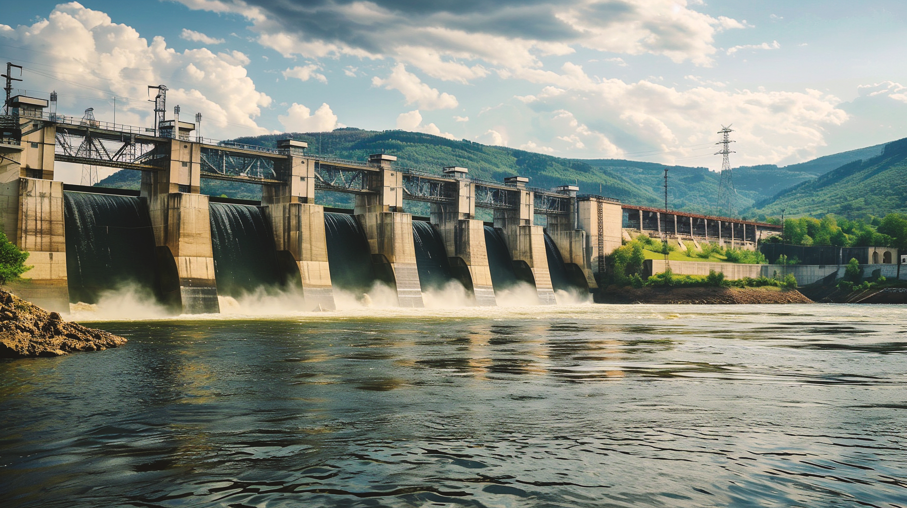

AGES Consultants is a professional registered engineering firm staffed and organized to provide multi-disciplinary engineering consulting services. The name AGES is an abbreviation for “Al-Kasib Group of Engineering Services”, and the term Al-Kasib being an extract from the Arabic quote which translates to “The one who strives to earn (through fair means) is the beloved of Allah (SWT)”. This quote has a strong basis in the way AGES Consultants conducts its businesses and has been a strong driving force in the firm’s ventures.
Know more about us
Years Of Experience
Project Challenge
Positive Reviews
Trusted Clients